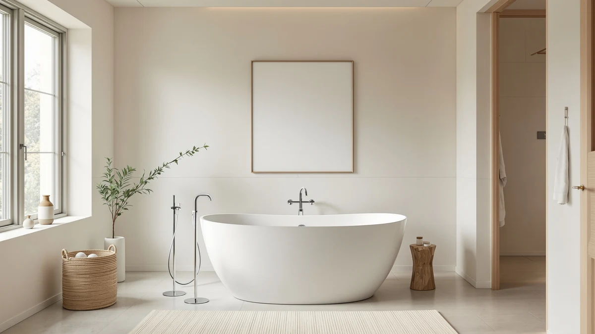

Best Freestanding Tub for Short Person (2026)
Prices and picks verified as of August 2026. Independent, reader-supported reviews.


Quick Answer
If you're under about 5'4", the best freestanding tub for short person shoppers is the 59" Acrylic Freestanding Bathtub Deep from LarWorks. Its shorter length lets you brace your feet against the far wall while its Deep basin still covers your shoulders, and at $404.99 it's also the cheapest tub in this comparison. If your bathroom can spare the extra length, the 67'' Extra-Deep IDEALHOUSE below is worth comparing for a deeper soak.
Our pick: 59" Acrylic Freestanding Bathtub Deep, $404.99 Check Price on Amazon
Bottom line: our top pick is the 59" Acrylic Freestanding Bathtub at $404.99. The best budget option is the Freestanding Bathtub 59 inch Acrylic Free Standing Tub 59 Inch at $449.99.
Things to Know Before You Buy
- A 59-inch tub fits a shorter frame better than a longer one. It lets a shorter bather brace their feet against the far wall. In a 67-inch tub sized for someone over six feet, you float in the middle with nothing to push against.
- Depth decides whether you actually soak or sit in a puddle instead. Tubs labeled Deep or Extra-Deep hold enough water to cover your shoulders even while you sit more upright, which matters more on a shorter torso than a longer one.
- Acrylic is the standard material at this price point. It's light enough for one or two people to carry in and warms up fast, though it won't hold heat quite as long as heavier materials.
- Check your doorway and hallway before you order. Even a 59-inch tub is a large delivery, and returning a tub this size is expensive and disruptive.
If you're under about 5'4", skip the longest tub on the shelf. The best freestanding tub for short person shoppers is the one that lets your feet reach the far wall. Most freestanding tubs run 59 to 67 inches, and a tub built for someone over six feet leaves a shorter bather floating in the middle without anything to brace against. We compared seven acrylic freestanding tubs on the two numbers that matter most for a shorter frame, length and depth, since a tub that's short but shallow trades one problem for another.
Ilane Tall specializes in bathroom fixtures for this network of sites, and for this guide she read every listing end to end, cross-referenced interior length and depth against the product photos, and ranked what was left by fit for a shorter frame rather than by price. We are not running a testing lab or flooding tubs in a warehouse. We are reading the numbers that predict whether a shorter bather will actually enjoy the tub, and flagging where the listing overstates what it delivers.
Our top pick for the best freestanding tub for short person shoppers is the 59" Acrylic Freestanding Bathtub Deep from LarWorks, which pairs a bracing-friendly length with a deep basin at the lowest price in this guide. The right tub still depends on your budget and how deep you want to soak, so below we explain how we picked, then walk through each of the seven tubs, who each one suits, and its honest drawbacks.
Why You Should Trust Us
This guide is written and maintained by Ilane Tall, who has spent years comparing bathroom fixtures on the numbers that predict real-world satisfaction rather than on marketing copy. We do not invent expert quotes or claim to run a physical testing lab. We read every spec sheet for this list, verify each tub's exterior length and interior depth against the listing photos, and refuse to recommend anything we would not install in our own bathroom. For a guide built around finding the best freestanding tub for short person shoppers, that means treating length and depth as the deciding numbers instead of price or star rating. Our Amazon commissions never change a ranking.
How We Picked
We started from the full freestanding acrylic tub market and compared 59-inch tubs against 67-inch ones side by side, since a shorter bather needs to weigh bracing room against overall soak size before picking either one. From there we prioritized tubs labeled Deep or Extra-Deep over standard-depth models, because a shorter torso needs more water to actually cover its shoulders. We cross-checked every listing's stated length against its product photos and dropped anything where the description contradicted its own images. The tubs that made the cut span budget and premium picks between $404.99 and $808.83, so a shorter bather can find the length and depth they need at more than one price point.
How We Compared
Because none of us can physically climb into seven tubs before a bathroom is plumbed, our evaluation for the best freestanding tub for short person searches is built on the numbers a shorter bather actually feels: exterior length, interior depth, and material. For each tub we recorded the stated length in inches, whether the listing calls out Deep, Extra-Deep, or standard depth, the brand and material described in the title, and the price and Amazon rating at the time of publishing. We compared the 59-inch and 67-inch models side by side to see how much bracing room the shorter tubs buy back, and we read the rating pattern across all seven to make sure a low price wasn't hiding a quality problem. That comparison, more than any single spec, is what separates the picks below.
Our Picks

59" Acrylic Freestanding Bathtub Deep
What we like
- Lowest price in this guide at $404.99
- Labeled Deep, so the basin covers your shoulders even while sitting more upright
- 59-inch length gives a short bather something to brace their feet against
- 4-star Amazon rating, in line with every other pick here
Flaws but not dealbreakers
- LarWorks is a newer name without the brand history of WOODBRIDGE
- 59 inches limits how much you can stretch out if the bathroom allows more room
| Material | — |
| Size | 59 Inch |
At 59 inches, this LarWorks tub gives a shorter bather the single biggest advantage on this list: a far wall you can actually reach with your feet. That matters more than it sounds. In a 67-inch tub built for someone over six feet, a bather under 5'4" ends up floating in the middle of the basin with nothing to push against, which makes it hard to relax instead of easier. Here, you can brace yourself and settle in. The listing also calls out a Deep basin, so the shorter length isn't wasted on a shallow pool. Combined with the acrylic shell, light enough to carry in without renting equipment, it's the pick that solves the height problem without asking you to spend $700 or more.
At $404.99, it's the least expensive tub in this comparison by more than $40. LarWorks doesn't carry the multi-year brand reputation that WOODBRIDGE has built in acrylic tubs, so you're trusting the spec sheet and a 4-star Amazon rating more than a long history. But if the priority is simply getting a secure, deep soak sized for a shorter frame at the lowest price, this tub does it. Measure your bathroom door and hallway before you order, since even a 59-inch tub is a sizable delivery.

Freestanding Bathtub 59 inch Acrylic
What we like
- Same 59-inch bracing length as the LarWorks top pick
- Acrylic build keeps it light and easy to carry in
- 4-star rating in line with every other pick here
Flaws but not dealbreakers
- $45 more than the LarWorks top pick for the same length
- Listing doesn't call out Deep or Extra-Deep, so the basin may sit shallower than the tubs that do
- EliteEdge is a less established brand than WOODBRIDGE
| Material | — |
| Size | 59 Inch |
The EliteEdge Freestanding Bathtub 59 inch Acrylic gives a shorter bather the same bracing-friendly length as the LarWorks top pick, without the Deep callout that separates a real soaking tub from a standard one. For a shorter frame, that difference is worth noticing. A 59-inch tub already solves the floating problem by giving you a wall to push your feet against, but without a stated depth upgrade, you can't assume the water covers your shoulders the way it does in the tubs labeled Deep or Extra-Deep on this list.
At $449.99, it costs about $45 more than the LarWorks top pick for a tub with one fewer confirmed feature. EliteEdge is also a newer name without WOODBRIDGE's reputation, so the 4-star Amazon rating is doing more of the credibility work here than brand history. If the LarWorks pick is unavailable or you simply prefer this listing's finish, it's a reasonable second option, but it doesn't beat the top pick on either price or confirmed depth.

67'' Acrylic Freestanding Bathtub Extra-Deep
What we like
- Extra-Deep basin, the deepest label of any tub on this list
- 67 inches of room if your bathroom can spare the length
- 4-star Amazon rating, matching every other pick here
Flaws but not dealbreakers
- At 67 inches, a shorter bather can't brace their feet against the far wall
- Costs $222 more than the 59-inch LarWorks top pick
- IDEALHOUSE doesn't have the decades-long track record of WOODBRIDGE
| Material | — |
| Size | 67 Inch |
The IDEALHOUSE 67'' Acrylic Freestanding Bathtub Extra-Deep trades the bracing convenience of a shorter tub for the deepest basin in this entire comparison. A shorter bather gives up the ability to plant their feet against the far wall, and instead floats a little more than they would in the 59-inch picks above. In return, you get water depth that no other tub here matches, which means a fuller soak even if your legs don't fully extend to touch anything solid.
At $626.98, it costs $222 more than the LarWorks top pick, and IDEALHOUSE is still a newer name without WOODBRIDGE's brand history. That's a real trade-off for a shorter bather: more depth and length, but less to brace against and a higher price. If depth is the priority and your bathroom has the room, this is the tub to compare against the top pick before deciding.

67" Acrylic Freestanding Bathtub Deep
What we like
- Labeled Deep, so the basin holds enough water for a full soak
- 67 inches of length for anyone who wants extra room to move
- 4-star Amazon rating, consistent with every other pick in this guide
Flaws but not dealbreakers
- The most expensive tub in this comparison at $808.83
- Costs $182 more than the Extra-Deep IDEALHOUSE above despite a shallower depth label
- At 67 inches, a shorter bather still can't brace their feet against the far wall
| Material | — |
| Size | 67 inch |
The IDEALHOUSE 67" Acrylic Freestanding Bathtub Deep sits at the top of the price range in this guide, and for a shorter bather it's the hardest pick to justify on value. It shares its 67-inch length and IDEALHOUSE build with the Extra-Deep tub above, but carries the plain Deep label instead of Extra-Deep, meaning it likely holds less water for roughly the same footprint. You still don't get anything to brace your feet against at this length, so the core trade-off for a shorter bather is the same as every other 67-inch tub here.
At $808.83, it costs $182 more than the Extra-Deep IDEALHOUSE for what reads as a shallower basin, and $404 more than the LarWorks top pick. Unless a detail in the listing photos or finish wins you over specifically, the Extra-Deep IDEALHOUSE above is the harder tub to beat if you want 67 inches, and the LarWorks top pick is the harder one to beat if you want value for a shorter frame.

WOODBRIDGE 67" Acrylic Freestanding Bathtub
What we like
- WOODBRIDGE has a longer track record in acrylic freestanding tubs than the other brands here
- 67 inches of length for a bather who wants extra room despite a shorter frame
- 4-star Amazon rating, matching every other pick in this guide
Flaws but not dealbreakers
- Listing doesn't call out Deep or Extra-Deep the way several other tubs here do
- At 67 inches, a shorter bather still can't brace their feet against the far wall
- Costs $294 more than the LarWorks top pick
| Material | — |
| Size | 67 Inch |
WOODBRIDGE has built a reputation as one of the more established names in affordable acrylic freestanding tubs, and this 67-inch model brings that track record to a shorter bather's shopping list. Unlike the top pick, it doesn't give you a wall to brace your feet against, so it asks a shorter frame to trade that convenience for extra room and a brand name you can look up reviews on going back years.
At $699.00, it costs $294 more than the LarWorks top pick and doesn't carry a Deep or Extra-Deep label the way several cheaper tubs on this list do. That combination makes it a harder sell purely on the numbers for a shorter bather. If brand history is worth paying for on its own, this is the pick. If it isn't, the LarWorks top pick or the Extra-Deep IDEALHOUSE above both offer more for a shorter frame at a lower price.

59 Inch Acrylic Freestanding Bathtub
What we like
- Same 59-inch bracing length as the top two picks
- Acrylic build keeps it light and easy to carry in
- 4-star rating in line with every other pick here
Flaws but not dealbreakers
- $135 more than the LarWorks top pick for the same length
- Listing doesn't call out Deep or Extra-Deep, unlike the top pick
- Priced above the EliteEdge alternative without a stated depth advantage
| Material | — |
| Size | 59 Inch |
The IDEALHOUSE 59 Inch Acrylic Freestanding Bathtub gives a shorter bather the same 59-inch bracing length as the top pick and the EliteEdge alternative, from the brand that also makes two of the 67-inch tubs in this guide. Like the EliteEdge tub, the listing doesn't call out a Deep or Extra-Deep basin, so you're buying the length advantage without a confirmed depth upgrade over a standard tub.
At $539.99, it's the most expensive of the three 59-inch tubs in this comparison, and $135 more than the LarWorks top pick that does carry a Deep label. There's no clear reason to choose this one over the top pick unless you specifically prefer IDEALHOUSE as a brand or this listing's particular finish. For most shorter bathers, the LarWorks pick offers more confirmed depth for less money in the same footprint.

67 Inch Acrylic Freestanding Bathtub
What we like
- Cheapest of the four 67-inch tubs in this guide
- Only $148 more than the LarWorks 59-inch top pick, for eight extra inches of room
- 4-star Amazon rating, matching every other pick here
Flaws but not dealbreakers
- Listing doesn't call out Deep or Extra-Deep, unlike several 59-inch and 67-inch tubs on this list
- At 67 inches, a shorter bather can't brace their feet against the far wall
- Garvee is a less established brand than WOODBRIDGE
| Material | — |
| Size | 67 Inch |
The Garvee 67 Inch Acrylic Freestanding Bathtub is the least expensive way into a 67-inch tub in this guide, which matters if your household includes a taller person who also uses the bathroom. For a shorter bather buying for themselves alone, it makes the least sense of any tub here: it gives up the bracing length of the 59-inch picks without adding a Deep or Extra-Deep label to justify the trade with extra water depth.
At $552.48, it costs only $148 more than the LarWorks top pick, so the price gap to get eight extra inches is smaller than with the other 67-inch tubs. If length matters more to your household than a shorter bather's ability to brace their feet, this is the cheapest way to get it. If you're shopping for a shorter bather specifically, the LarWorks top pick or the Extra-Deep IDEALHOUSE serve that need better.
Quick Comparison
| Product | Material | Price | Rating | Best for | Get it |
|---|---|---|---|---|---|
| 59" Acrylic Freestanding Bathtub Deep | — | $404.99 | 4 | Best overall for a short person | View on Amazon → |
| Freestanding Bathtub 59 inch Acrylic | — | $449.99 | 4 | Bracing length from a different brand | View on Amazon → |
| 67'' Acrylic Freestanding Bathtub Extra-Deep | — | $626.98 | 4 | Deepest soak if length isn't a constraint | View on Amazon → |
| 67" Acrylic Freestanding Bathtub Deep | — | $808.83 | 4 | Same brand as the Extra-Deep pick, at a premium | View on Amazon → |
| WOODBRIDGE 67" Acrylic Freestanding Bathtub | — | $699.00 | 4 | Established brand in a 67-inch length | View on Amazon → |
| 59 Inch Acrylic Freestanding Bathtub | — | $539.99 | 4 | A third 59-inch option if you prefer IDEALHOUSE | View on Amazon → |
| 67 Inch Acrylic Freestanding Bathtub | — | $552.48 | 4 | Cheapest way into a 67-inch tub for shared use | View on Amazon → |
The Competition
Finding the best freestanding tub for short person searches meant ruling out a lot of what shows up in a general freestanding tub search. We excluded tubs over 67 inches outright, since anything longer stretches the floating problem even further for a shorter bather with nothing to brace against. That cut a long list of oversized statement tubs that are popular for spacious primary bathrooms but were never going to solve this problem.
We also passed on listings where the stated dimensions contradicted the product photos, since a tub that can't get its own numbers straight isn't one we're willing to recommend sight unseen. Among the tubs that stayed in the running, we gave extra weight to any listing that explicitly called out Deep or Extra-Deep, since a shorter torso benefits more from that spec than a taller one does, and we treated the absence of that label as a real trade-off rather than a minor detail.
Frequently Asked Questions
What size freestanding tub is best for a short person?
A 59-inch tub usually works better for a short bather than a 67-inch one. At 59 inches you can brace your feet against the far wall and stay in place while you soak. In a 67-inch tub built for someone over six feet, a shorter bather ends up floating in the middle with nothing to push against.
Should a short person choose a deep tub or a long tub?
Depth matters more than length for a shorter frame. A tub labeled Deep or Extra-Deep lets you submerge your shoulders while sitting more upright, which suits a shorter torso better than stretching out in a long, shallow basin you can't brace against anyway.
Do 59-inch tubs cost less than 67-inch tubs?
Not automatically, but in this guide they do. All three 59-inch tubs here cost less than $540, while the four 67-inch tubs range from $552.48 to $808.83. Price depends more on the depth label and brand than on length alone, but the shorter tubs happen to be the cheaper tier in this lineup.